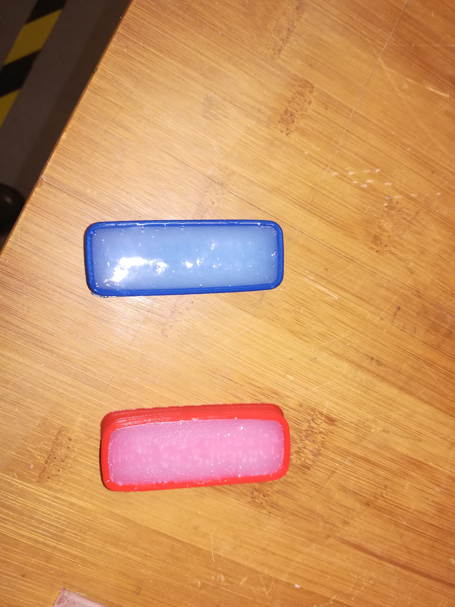
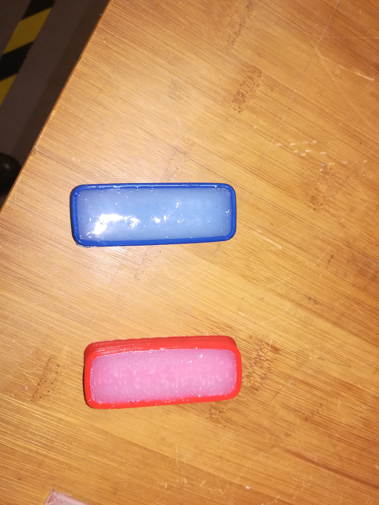
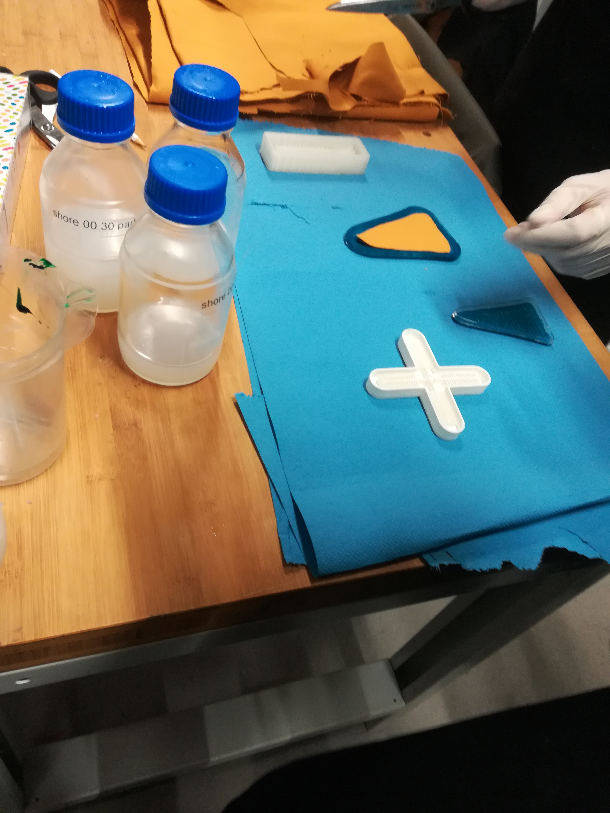
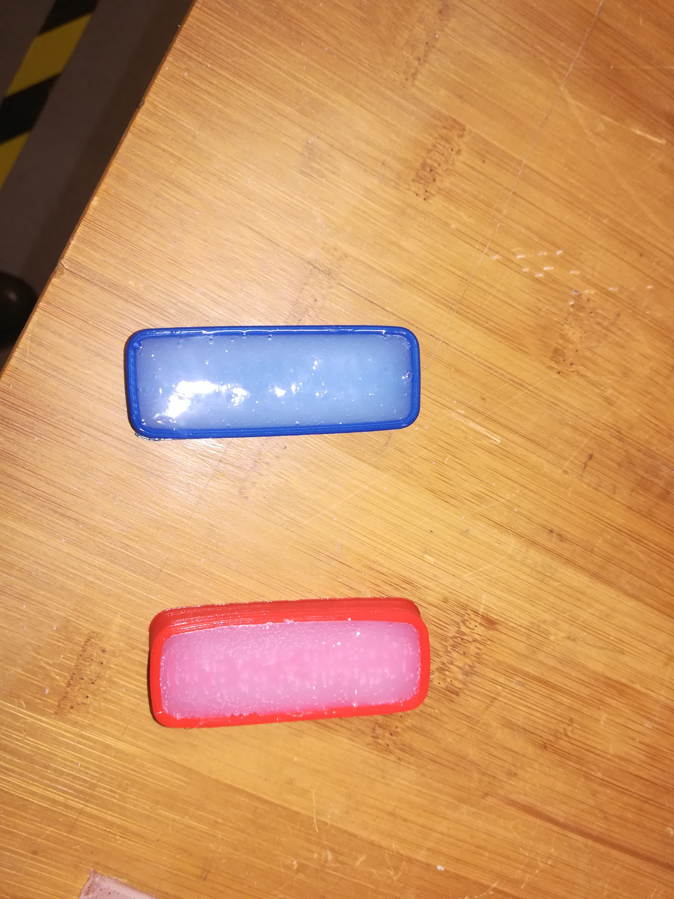

The soft robotic glove is made of several components covering the fields of electricity, sew techniques and soft robotics itself. The process of making the fingers is split up into several steps. First it has to be decided about the form and and length of the fingers. These models are created in a program called Fusion 360°. After this step the models of the finger can be printed in a 3D printer. For this part of work the file has to be in stl transformed in Exact Flat which then can be put on a SD Card and is ready to print. My ptinting took always 3 hours. After cooling down I took the pieces and started to cast the eco flex into them. This material is silicon which forms the fingers. Part A and B from the silicon has to be evenly mixed together and gently poured into the modles. They can be put into the oven now and let there for half an hour so they are completely firm. After being dry the fingers are ready to be carefully pulled out.The other side of the finger is made by another layer of the silicon so it is isolated in order the air can move through the chambers which creates the inflation. Due to wrong mixtures or harsh movements a lot of these models broke and work in the end or had wholes in it. We tried to improve and be more precise and careful but only teo of them really worked. Still they could not completely perform the wished movement or enough pressure is not been created so that the person's finger is really moved by being inflated. After the fingers are done they are inserted into the pockets of the glove and are connected to the pump and sensor which enables it's movement.

